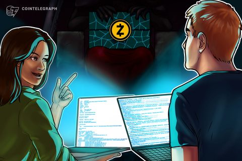

Cointelegraph
Zcash devs propose another block time cut days after NU7 upgrade
The proposed reduction aims to shorten transaction confirmation times and improve the user experience for point-of-sale…
查看全文精选全网加密货币行业核心动态、政策风向与项目进展，7x24h 多源聚合。

The proposed reduction aims to shorten transaction confirmation times and improve the user experience for point-of-sale…
查看全文PANews 11月9日消息，加州金融保护与创新部（DFPI）下令大型加密货币 ATM 运营商 CoinFlip 向加州诈骗受害者赔偿超过 480 万美元，并额外支付逾 35 万美元非法收取的超额费用。调查发现，自 2021 年以来，Coi…
查看全文PANews 11月9日消息，据 GoPlus 监测分析，Keplr 钱包因社交登录服务提供商 Web3Auth 漏洞，导致部分用户私钥泄露或交易签名能力被盗，至少约 100 万美元资产遭窃，另有约 600 万美元资产被转入官方确认的救援地…
查看全文PANews 11月9日消息，币安 Alpha 已恢复 BSC、以太坊、Base 和 Arbitrum 四条网络的提现。此前已恢复的资产包括 ETH 和 SOL 网络上的多个代币，以及 HYPE 和 APT。币安表示将继续分阶段恢复更多资产…
查看全文PANews 11月9日消息，Strategy（MSTR）董事 Jarrod M. Patten 于 11 月 4 日以每股 18.236 美元的价格行使股票期权，获得 4750 股 A 类普通股，随后分五笔全部出售。五笔交易各出售 950…
查看全文PANews 11月9日消息，针对 X 账号 @cryptotrice 发帖推广的所谓“逆向破解版 TradingView Premium”，慢雾安全团队跟进分析后确认，Windows 样本为窃密木马： 具备浏览器凭据、加密钱包及 Tele…
查看全文PANews 11月9日消息，据 Onchain Lens 监测，某地址从 Tornado Cash 提取 100 枚 ETH（价值约 21.4 万美元），并经 Unit Treasury、Hyperliquid 将资金兑换为 60.46…
查看全文PANews 11月9日消息，根据 SoSoValue 数据，上周交易日（美东时间 11月2日至11月6日）HYPE现货 ETF 净流出 1561.68 万美元。 上周净流出最多的HYPE现货 ETF 为 Bitwise ETF BHYP…
查看全文PANews 11月9日消息，根据 SoSoValue 数据，上周交易日（美东时间 11月2日至11月6日）SOL现货 ETF 净流出 2625.21 万美元。 上周净流出最多的SOL现货 ETF 为 Bitwise ETF BSOL，周度…
查看全文PANews 11月9日消息，据 SoSoValue 数据，上周交易日（美东时间 11月2日至11月6日）以太坊现货 ETF 净流出 3.65 亿美元。 上周净流出最多的以太坊现货 ETF 为贝莱德（Blackrock）ETF ETHA，周…
查看全文PANews 11月9日消息，据 SoSoValue 数据，上周交易日（美东时间 11月2日至11月6日）比特币现货 ETF 净流出 12.82 亿美元。 上周净流出最多的比特币现货 ETF 为贝莱德（Blackrock）ETF IBIT…
查看全文Threshold halted its tBTC bridge on Oct. 30 as operators addressed a critical Linux kernel vulnerability that could allo…
查看全文